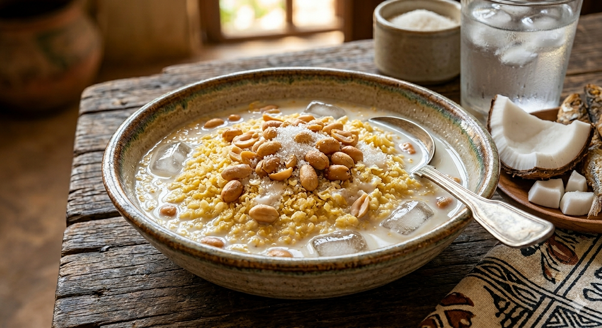

The Ultimate Garri Soakings
Common throughout West Africa, Garri Soakings is a beloved, refreshing meal. It is famously nicknamed "Life-Saver" due to its incredible speed of preparation and its ability to satisfy hunger instantly.
- Prep Time: 2 minutes
- Cook Time: 0 minutes — it's Garri!
- Servings: 1 Person
- Difficulty: Easy

Ingredients
- 1 cup White or Yellow Garri
- Chilled Water
- Sugar (to taste)
- Roasted Groundnuts (Peanuts)
- Milk (Liquid or Powdered)
-
Optional sides:
Instructions
- Pour the Garri into a clean bowl.
- Add a small amount of water to rinse the Garri; quickly pour out the floating particles (chaff) and the excess water.
- Pour in enough chilled water to cover the Garri to your preferred level.
- Add your sugar and milk, then stir well.
- Top it off with a handful of crunchy groundnuts.
- Enjoy immediately while the Garri is still crunchy!
Pro Tips
- The Crunch Rule: Always add the chilled water last and eat immediately to ensure the Garri stays crunchy.
- Temperature Control: For the best experience, use ice cubes to keep the bowl freezing cold, especially on a hot afternoon.
- The Perfect Balance: A tiny pinch of salt helps to bring out the sweetness of the milk and sugar.
- No Clumps: If using powdered milk, mix it with a little water in a separate spoon before adding it to the bowl to avoid "milk balls."
- The Float Test: If your groundnuts sink, they might be soft so always use freshly roasted nuts for that signature "pop."
Learn more about Garri here.